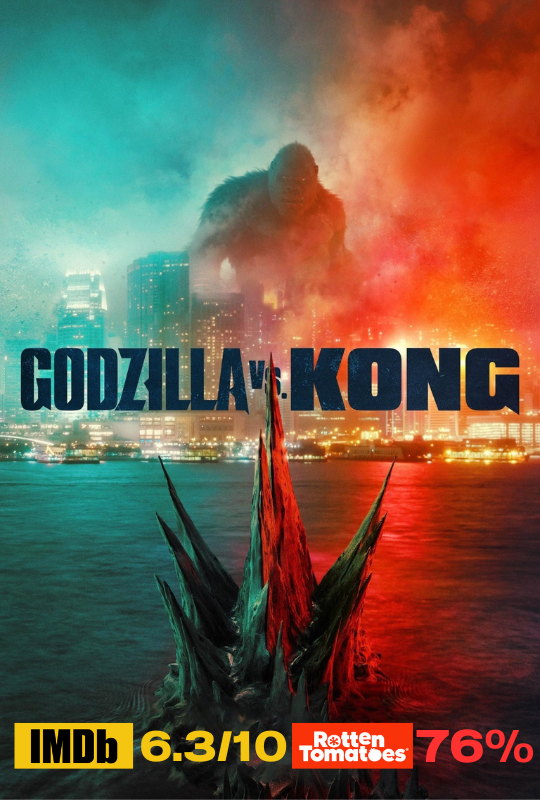
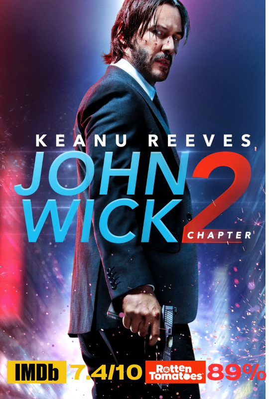
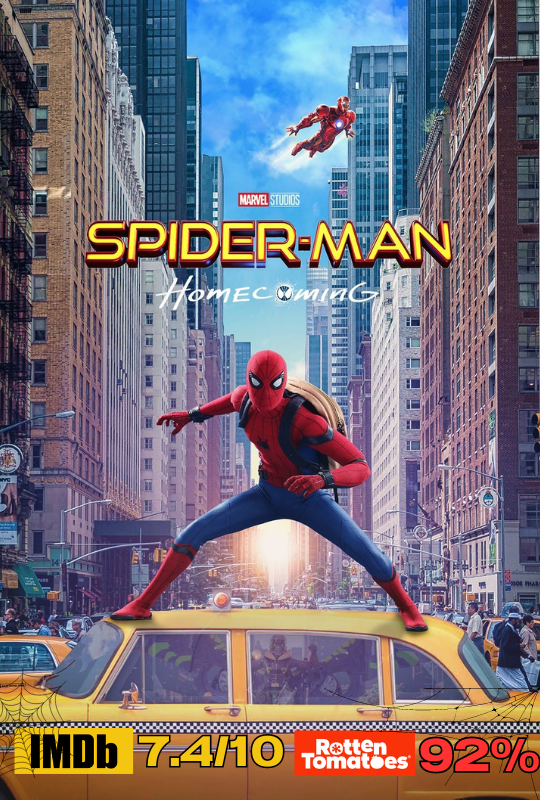

1.Godzilla vs Kong (2021)

คะแนนรีวิวจากเว็บไซต์ IMDB 6.3/10
คะแนนรีวิวจากเว็บไซต์ Rotten Tomatoes 76%
เรื่องย่อ Godzilla vs. Kong บอกเล่าเรื่องราวเมื่อสองตำนานต้องปะทะกันในศึกที่โลกต้องจารึกทุกยุคทุกสมัย โชคชะตาของโลกมนุษย์ก็ถูกแขวนอยู่บนเส้นด้าย คอง
และผู้ติดตามของมัน เริ่มต้นการเดินทางเสี่ยงอันตรายเพื่อตามหาบ้านที่แท้จริง หนึ่งในผู้ร่วมเดินทางคือ เจีย สาวน้อยกำพร้าที่มีสายใยมิตรภาพอันแข็งแกร่งและไม่เหมือนใครเกิดขึ้นระหว่างพวกเขา
โชคร้ายที่พวกเขาดันเลือกเดินทางที่นำไปสู่การเผชิญหน้ากับ ก็อดซิลล่า ที่กำลังเกรี้ยวกราดเกิดเป็นความพินาศไปทั่วทั้งโลก แต่แท้จริงแล้วศึกสังเวียนของสองยักษ์ใหญ่ในตำนานครั้งนี้ถูกบงการด้วยอำนาจปริศนา
และเป็นจุดเริ่มต้นของความลับที่ซ่อนอยู่ภายใต้ใจกลางของโลกมนุษย์เพียงเท่านั้น
2.John Wick: Chapter 2 (2017)

คะแนนรีวิวจากเว็บไซต์ IMDB 7.4/10
คะแนนรีวิวจากเว็บไซต์ Rotten Tomatoes 89%
เรื่องย่อ John Wick: Chapter 2 จะเล่าเรื่องราวของ จอห์น วิค มือสังหารผู้เป็นตำนานที่ถูกบีบให้กลับมาทำงานอีกครั้งหลังจากเกษียณตัวเองไป
เพราะอดีตเพื่อนร่วมงานได้วางแผนเข้าควบคุมองค์กรมือสังหารลับข้ามชาติ ด้วยความผูกพันธ์ดุจพี่น้องต่างสายเลือด จอห์น วิค ให้คำมั่นว่าจะช่วย เขาได้เดินทางไปยังกรุงโรม
ที่ซึ่งเขาต้องเผชิญหน้ากับเหล่าบรรดานักฆ่าที่อันตรายที่สุดในโลก
3.SpiderMan: Homecoming (2017)
